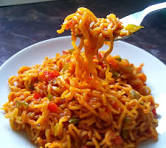

Maggi is a popular food brand known especially for its instant noodles, seasoning products, soups, and sauces. Its instant noodles are loved for their quick preparation, savory flavor, and convenience. Maggi is widely enjoyed as a quick snack or meal and can be customized with vegetables, eggs, spices, or other ingredients. There are many variants too itself.
Maggi is a famous food brand that originated in Switzerland in the 19th century and later became part of Nestlé. It is best known for its instant noodles, but the brand also produces seasonings, soups, sauces, and bouillons. Maggi noodles are popular in many countries because they are quick and easy to prepare. People often add vegetables, eggs, cheese, chicken, or different spices to make them more delicious. The flavors and varieties of Maggi products can also differ from one country to another, making the brand popular around the world.